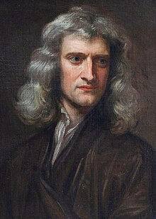
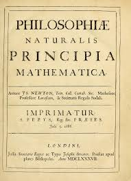

Isaac Newton, born December 25, 1642, Woolsthorpe, Lincolnshire, England was an English physicist and mathematician who was the culminating figure of the Scientific Revolution of the 17th century.
Isaac Newton changed the way we understand the Universe. Revered in his own lifetime, he discovered the laws of gravity and motion and invented calculus. He helped to shape our rational world view.
Isaac Newton is generally regarded as one of the most famous mathematicians in history. He is credited with the discovery of gravity, the Universal Laws of Motion, calculus, the theory of color as an intrinsic quality of light, and reflecting telescopes.
He formulated laws of motion and gravitation. These laws are math formulas that explain how objects move when a force acts on them. Isaac published his most famous book, Principia, in 1687 while he was a mathematics professor at Trinity College, Cambridge.
 Back to top